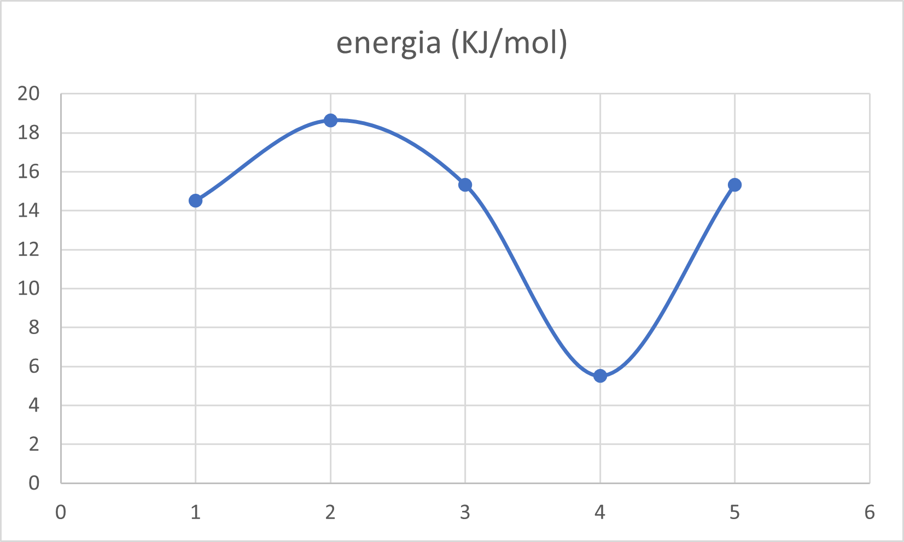

Campos de Fuerza
En el estudio de la acetona y su comportamiento molecular, los campos de fuerza son herramientas clave utilizadas en simulaciones computacionales para describir las interacciones entre los átomos de la molécula. Los campos de fuerza son conjuntos de parámetros que representan las fuerzas y energías asociadas con los enlaces químicos, ángulos de enlace, torsiones y fuerzas no enlazantes, como las fuerzas de van der Waals y las interacciones electrostáticas.
| Campo de Fuerza | Energia |
|---|---|
| GAFF | 14,5112 |
| CHEMICAL | 18,6328 |
| UFF | 5,51927 |
| MMFF94s | 18,6328 |
| MMFF94 | 18,6328 |
Distancias
En el estudio de la acetona y otras moléculas, los campos de fuerza son modelos matemáticos que describen las interacciones entre los átomos de la molécula. Estos modelos se basan en principios físicos y químicos fundamentales y se utilizan en simulaciones computacionales para predecir propiedades y comportamientos moleculares.
| Enlace | GAFF | UFF | MMFF94 | MMFF94s |
|---|---|---|---|---|
| O=C | 1,22A | 1,221A | 1,032A | 1,032A |
| C-C | 1,515A | 1,500A | 1,506A | 1,506A |
| C-CH3 | 1,515A | 1,500A | 1,506A | 1,506A |
Angulos
En el caso de la acetona, un campo de fuerza asignaría parámetros numéricos a los diferentes átomos de carbono, hidrógeno y oxígeno que componen la molécula. Estos parámetros incluyen las masas atómicas, las cargas eléctricas y los potenciales de interacción que describen las fuerzas entre los átomos vecinos, como los enlaces químicos, los ángulos de enlace y las torsiones.
| Ángulos | GAFF | UFF | MMFF94 | MMFF94s |
|---|---|---|---|---|
| O=C-C | 121.2° | 117,5° | 120.9° | 118,3° |
| C-C-C | 119,2° | 121,6° | 120.9° | 118,3° |
Perfil de Energía
Los perfiles de energía son útiles para comprender y analizar los patrones de consumo o producción de energía, lo que ayuda en la planificación, el diseño y la optimización de sistemas energéticos. Estos perfiles pueden variar según el tipo de energía, como electricidad, combustibles fósiles, energías renovables, etc. 